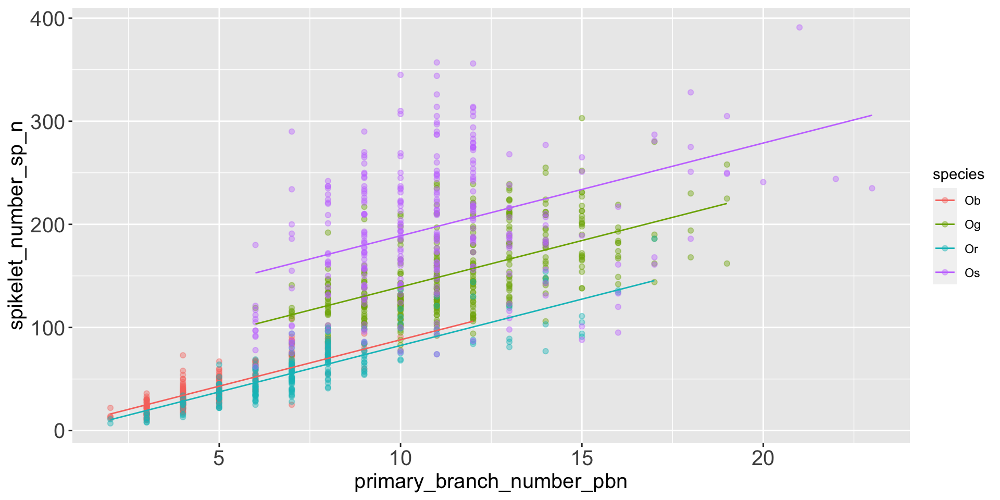
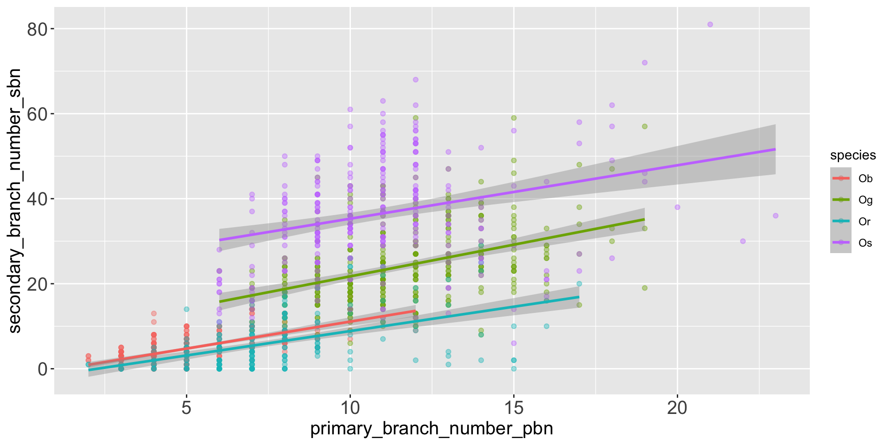
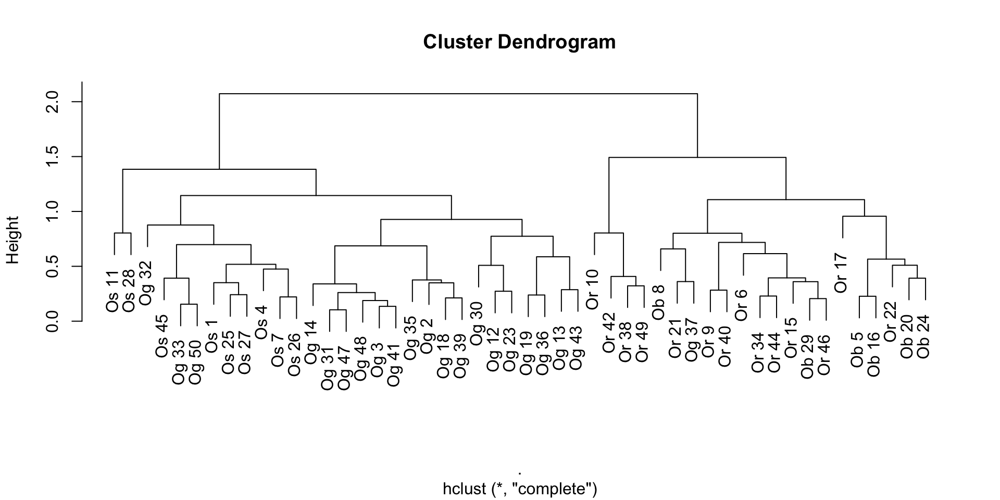
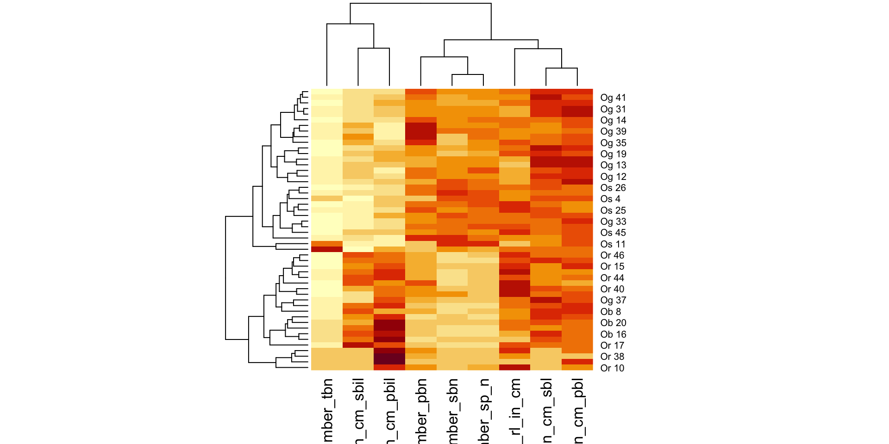
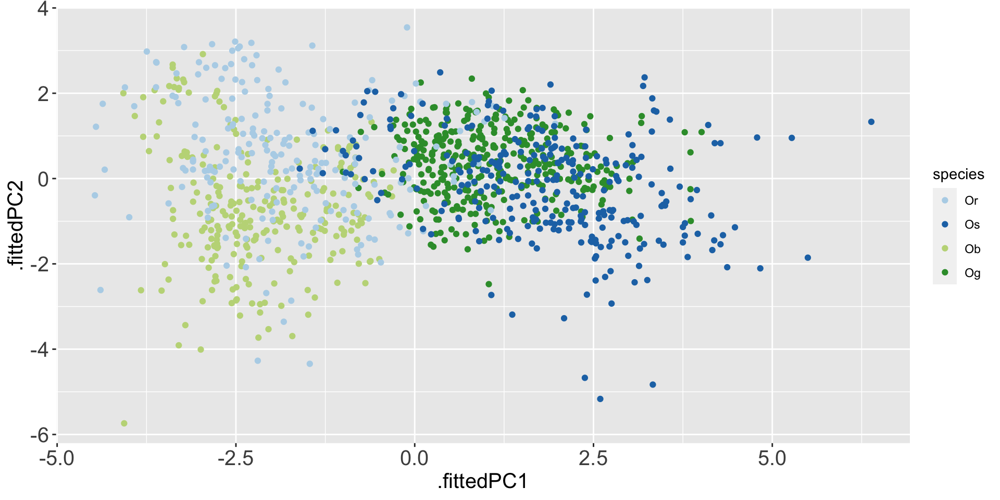
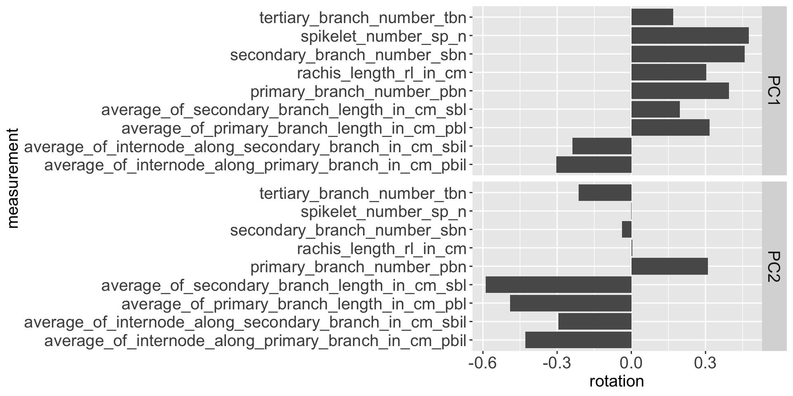

Explore your Data with Models
Otho Mantegazza
Data
We will keep working on the rice dataset.
Why Statistical Models
Why?
When we look for insights in complex datasets, sometimes we want to know:
- Is there a multivariate pattern in the data? One that is evident only when we compare multiple variables at once.
- Are the patterns that we observe in data there by chance? Or are they caused by something.
Which models?
Supervised models
We will use linear models to see if we could “predict” the number of spikelets from the number primary branches.
Unsupervised models
We will use clustering and Principal Component Analysis to detect multivariate patterns in the data.
Linear Models
Primary branches and spikelets
Primary branches and spikelets
Can we draw a line through the data that explains how many spikelets we do expect according to the number of primary branch?
Linear Regrssion
Linear Regression in R
Writing a linear model in R?
\[Y = a + b * X + error\]
\[Y \sim a + b * X\]
\[spikelets = intercept + slope * primary\_branches + error\]
\[spikelets \sim intercept + slope * primary\_branches\]
\[Y = a + b_1X_1 + b\_2X_2 + ... + b\_nX_n + error\]
Declare and evaluate the model
Declaring and evaluating a linear model in R with the function lm().
Explore the results
Call:
lm(formula = spikelet_number_sp_n ~ primary_branch_number_pbn,
data = rice)
Residuals:
Min 1Q Median 3Q Max
-134.11 -28.79 -11.35 19.07 209.47
Coefficients:
Estimate Std. Error t value Pr(>|t|)
(Intercept) -20.4391 4.0043 -5.104 3.89e-07 ***
primary_branch_number_pbn 15.5966 0.4102 38.023 < 2e-16 ***
---
Signif. codes: 0 '***' 0.001 '**' 0.01 '*' 0.05 '.' 0.1 ' ' 1
Residual standard error: 50.08 on 1138 degrees of freedom
Multiple R-squared: 0.5596, Adjusted R-squared: 0.5592
F-statistic: 1446 on 1 and 1138 DF, p-value: < 2.2e-16Tidy the results with broom

broom summarizes key information about models in tidy tibble()s. broom provides three verbs to make it convenient to interact with model objects:
tidy()summarizes information about model components.glance()reports information about the entire model.augment()adds information about observations to a dataset.
Glance the results of the linear regression
glance() reports information about the entire model.
Rows: 1
Columns: 12
$ r.squared <dbl> 0.5595511
$ adj.r.squared <dbl> 0.559164
$ sigma <dbl> 50.08321
$ statistic <dbl> 1445.727
$ p.value <dbl> 7.518553e-205
$ df <dbl> 1
$ logLik <dbl> -6078.191
$ AIC <dbl> 12162.38
$ BIC <dbl> 12177.5
$ deviance <dbl> 2854478
$ df.residual <int> 1138
$ nobs <int> 1140Tidy the results of the linear regression
tidy() summarizes information about model components.
Augment the results of the linear regression
# A tibble: 1,140 × 8
spikelet_number_sp_n primary_…¹ .fitted .resid .hat .sigma .cooksd .std.…²
<dbl> <dbl> <dbl> <dbl> <dbl> <dbl> <dbl> <dbl>
1 38 5 57.5 -19.5 0.00199 50.1 1.52e-4 -0.391
2 38 5 57.5 -19.5 0.00199 50.1 1.52e-4 -0.391
3 30 4 41.9 -11.9 0.00260 50.1 7.44e-5 -0.239
4 35 4 41.9 -6.95 0.00260 50.1 2.51e-5 -0.139
5 22 4 41.9 -19.9 0.00260 50.1 2.07e-4 -0.399
6 28 4 41.9 -13.9 0.00260 50.1 1.01e-4 -0.279
7 34 4 41.9 -7.95 0.00260 50.1 3.29e-5 -0.159
8 18 3 26.4 -8.35 0.00335 50.1 4.68e-5 -0.167
9 29 3 26.4 2.65 0.00335 50.1 4.71e-6 0.0530
10 38 6 73.1 -35.1 0.00151 50.1 3.72e-4 -0.702
# … with 1,130 more rows, and abbreviated variable names
# ¹primary_branch_number_pbn, ².std.resid
# ℹ Use `print(n = ...)` to see more rowsVisualize the results of the linear regression
Multiple Regression
# A tibble: 1 × 12
r.squared adj.r.squ…¹ sigma stati…² p.value df logLik AIC BIC devia…³
<dbl> <dbl> <dbl> <dbl> <dbl> <dbl> <dbl> <dbl> <dbl> <dbl>
1 0.766 0.766 36.5 931. 0 4 -5717. 11445. 11475. 1.51e6
# … with 2 more variables: df.residual <int>, nobs <int>, and abbreviated
# variable names ¹adj.r.squared, ²statistic, ³deviance
# ℹ Use `colnames()` to see all variable namesAnalysis of Variance Table
Model 1: spikelet_number_sp_n ~ primary_branch_number_pbn
Model 2: spikelet_number_sp_n ~ species + primary_branch_number_pbn
Res.Df RSS Df Sum of Sq F Pr(>F)
1 1138 2854478
2 1135 1513427 3 1341051 335.24 < 2.2e-16 ***
---
Signif. codes: 0 '***' 0.001 '**' 0.01 '*' 0.05 '.' 0.1 ' ' 1augmented_fit %>%
ggplot(aes(x = primary_branch_number_pbn,
y = spikelet_number_sp_n,
colour = species)) +
geom_point(alpha = .4) +
geom_line(aes(y = .fitted))
Analysis of Variance Table
Model 1: spikelet_number_sp_n ~ primary_branch_number_pbn
Model 2: spikelet_number_sp_n ~ species + primary_branch_number_pbn
Model 3: spikelet_number_sp_n ~ species + primary_branch_number_pbn +
species * primary_branch_number_pbn
Res.Df RSS Df Sum of Sq F Pr(>F)
1 1138 2854478
2 1135 1513427 3 1341051 337.0531 <2e-16 ***
3 1132 1501316 3 12111 3.0439 0.028 *
---
Signif. codes: 0 '***' 0.001 '**' 0.01 '*' 0.05 '.' 0.1 ' ' 1# A tibble: 5 × 5
term estimate std.error statistic p.value
<chr> <dbl> <dbl> <dbl> <dbl>
1 (Intercept) -1.92 3.13 -0.612 5.41e- 1
2 speciesOg 51.3 4.06 12.6 2.40e- 34
3 speciesOr -5.56 3.53 -1.58 1.15e- 1
4 speciesOs 101. 3.99 25.3 3.23e-112
5 primary_branch_number_pbn 9.00 0.434 20.7 2.63e- 81# A tibble: 1,140 × 9
spikelet_n…¹ species prima…² .fitted .resid .hat .sigma .cooksd .std.r…³
<dbl> <chr> <dbl> <dbl> <dbl> <dbl> <dbl> <dbl> <dbl>
1 38 Ob 5 43.1 -5.06 0.00379 36.5 1.47e-5 -0.139
2 38 Ob 5 43.1 -5.06 0.00379 36.5 1.47e-5 -0.139
3 30 Ob 4 34.1 -4.07 0.00394 36.5 9.85e-6 -0.112
4 35 Ob 4 34.1 0.932 0.00394 36.5 5.17e-7 0.0256
5 22 Ob 4 34.1 -12.1 0.00394 36.5 8.67e-5 -0.331
6 28 Ob 4 34.1 -6.07 0.00394 36.5 2.19e-5 -0.167
7 34 Ob 4 34.1 -0.0682 0.00394 36.5 2.77e-9 -0.00187
8 18 Ob 3 25.1 -7.07 0.00437 36.5 3.31e-5 -0.194
9 29 Ob 3 25.1 3.93 0.00437 36.5 1.02e-5 0.108
10 38 Ob 6 52.1 -14.1 0.00392 36.5 1.17e-4 -0.386
# … with 1,130 more rows, and abbreviated variable names ¹spikelet_number_sp_n,
# ²primary_branch_number_pbn, ³.std.resid
# ℹ Use `print(n = ...)` to see more rowsrice %>%
ggplot(aes(x = primary_branch_number_pbn,
y = secondary_branch_number_sbn,
colour = species)) +
geom_point(alpha = .4) +
geom_smooth(method = 'lm')
rice_simple <-
rice %>%
sample_n(50)
rice_simple %>%
select(species, rachis_length_rl_in_cm:spikelet_number_sp_n) %>%
mutate(species = paste(species, 1:n())) %>%
column_to_rownames('species') %>%
mutate_all(~scales::rescale(., to = c(0,1), from = range(.))) %>%
dist() %>%
hclust() %>%
plot()
rice_simple %>%
select(species, rachis_length_rl_in_cm:spikelet_number_sp_n) %>%
mutate(species = paste(species, 1:n())) %>%
column_to_rownames('species') %>%
mutate_all(~scales::rescale(., to = c(0,1), from = range(.))) %>%
as.matrix() %>%
heatmap()
With superheat?
rice_pc_data %>%
ggplot(aes(x = .fittedPC1,
y = .fittedPC2,
colour = species)) +
geom_point() +
scale_color_manual(values = rice_colors)
[1] 2.0456555 1.2842683 1.0533272 0.9646701 0.7491605 0.5211812 0.4553862
[8] 0.2487671 0.1540413rice_pc$rotation %>%
as.data.frame() %>%
rownames_to_column(var = 'measurement') %>%
pivot_longer(-measurement,
names_to = 'component',
values_to = 'rotation') %>%
filter(component %in% c('PC1', 'PC2')) %>%
ggplot(aes(y = measurement,
x = rotation)) +
geom_col() +
facet_grid(rows = vars(component)) 